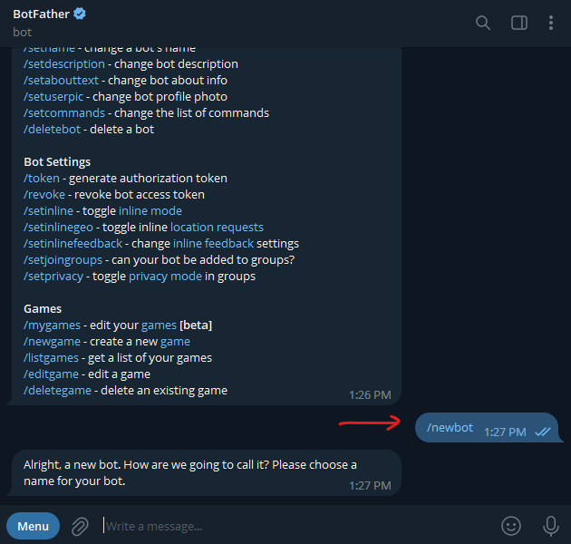
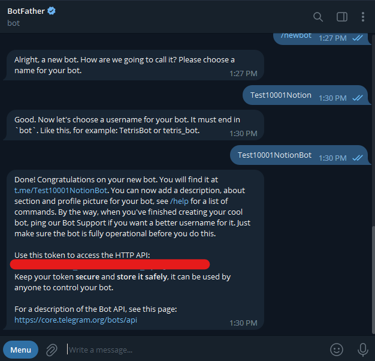
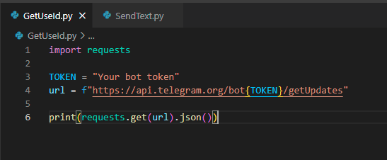
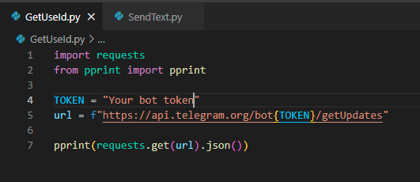
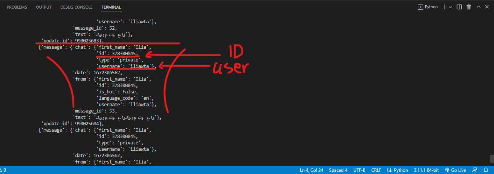
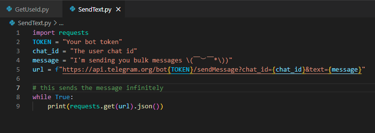
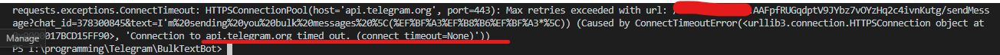

|Telegram Bulk messages with python
Using Telegram Bot’s with the help of python you can send bulk messages to anyone.
You just need 2 things →
- a bot
- chat id of the user you want to send bulk message
Create a bot
You can easily create a bot using BotFather
- type /newbot and follow the instructions.

- save your token somewhere safe and DO NOT LEND IT TO ANYONE

Get the user chat id
In order to find the specific user’s chat id we need them to send a message to our bot. (I think there might be some other ways to work this around, just search \(￣︶￣*\)))
Let’s write the script →

so what does this script do is that calls the getUpdates function. The method getUpdates returns an array of Update objects like new messages.
so if someone sends a message to our bot, we can find their chat id.
if you want the response to be more readable just use pprint() →

first be sure that the specific user has sent the message and then run the program

if the user hadn’t sent any message, the result will be empty.
writing a script for sending bulk messages
Now that we’ve got everything we wanted, let’s write the final script.

then run the program.
if the program returned this, you may want to use a VPN.

- Source: medium.com | stackoverflow
- Wrote: December 29, 2022 | Dey 8, 1401
- Updated:
- Posted: December 29, 2022 | Dey 8, 1401